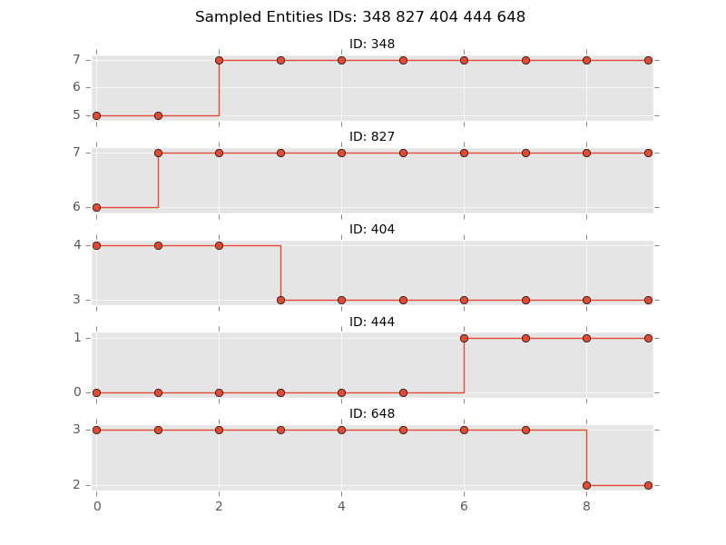
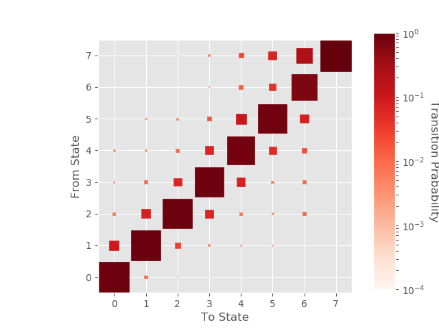

transitionMatrix Features¶
TransitionMatrix is an Apache 2.0-licensed Python package aimed at becoming the most intuitive and versatile tool to analyse discrete transition data
Overview¶
- transitioMatrix supports file input/output in json and csv formats
- it has a powerful API for handling event data (based on pandas)
- provides intuitive objects for handling transition matrices individually and as sets (based on numpy)
- supports visualization using matplotlib
Examples¶
Ploting individual transition trajectories

Sampling transition data
Estimation of transition matrix

Visualization of transition matrix
Details¶
- TODO